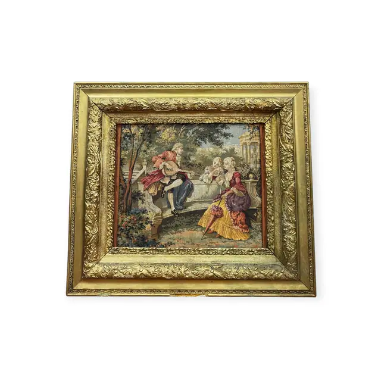
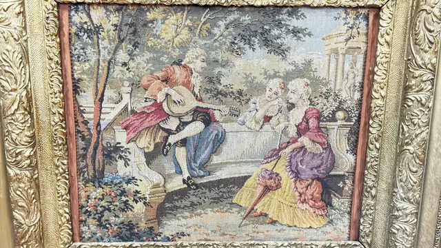

Handmade Objects
Rococo Garden Scene Tapestry in Gilt Frame, Framed
Unknown · 20th century after an 18th century composition
Price Upon Request


About the Item
A finely woven tapestry panel after a rococo garden painting. A gentleman in a plumed hat plays to two seated women in silk gowns; a parasol lies across the foreground and a domed pavilion closes the view through the trees. Rose, cream, sage and dusty blue dominate. Mounted in a heavy carved and gilded frame with a rose-red slip. Medium: woven tapestry panel. Condition: weave sound; slight gilt loss at the frame corners.
Details
- Creator:
- Unknown
- Creation Year:
- 20th century after an 18th century composition
- Medium:
- woven tapestry panel
- Period:
- 20Th
- Condition:
- Offered in the condition shown in the photographs.
- Reference Number:
- VO-240
- Documentation:
- none seen